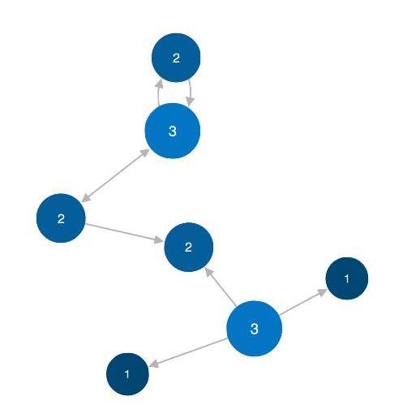
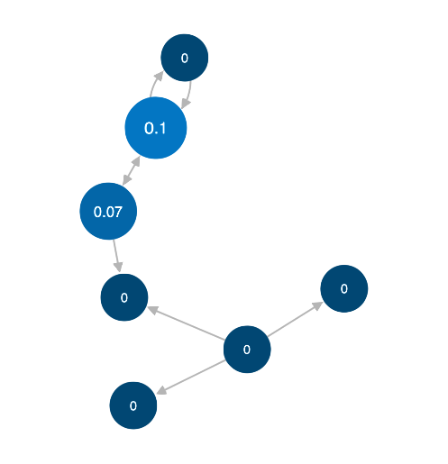
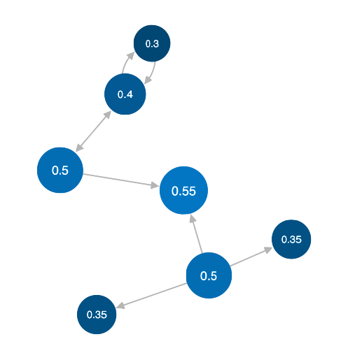
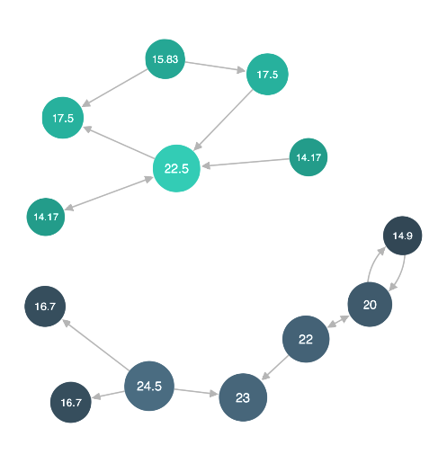
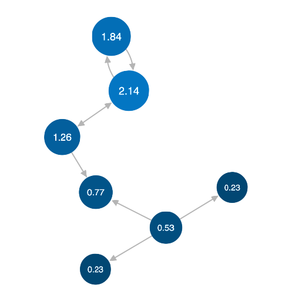
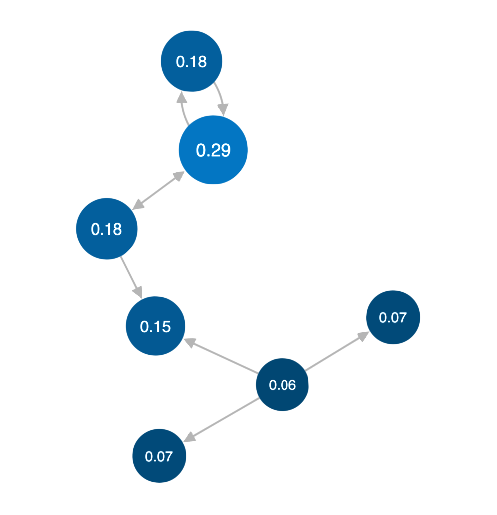

Graph Centrality
Introduction#
Nexus has many different analysis algorithms that you can use to identify important aspects of your network.
Social network analysis (SNA) or centrality measures are a vital tool for understanding the behaviour of networks and graphs. These algorithms use graph theory to calculate the importance of any given node.
Each centrality measure has strengths and weaknesses in identifying features of a network, so it is important to choose the right one.
Degrees#
Degree is the simplest form of centrality, and assigns scores to nodes based purely on the number of links held by each node. It tells us how many direct, ‘one hop’ connections each node has to other nodes within the network.
It is used for finding very connected individuals, popular individuals, individuals who are likely to hold most information or individuals who can quickly connect with the wider network.

Betweenness#
Betweenness centrality measures the number of times a node lies on the shortest path between other nodes.
This measure shows which nodes act as ‘bridges’ between nodes in a connected network. In other words, which nodes would have the greatest impact on the connectivity of the network if they were removed.
It is used for finding the nodes who influence the flow around a system. Betweenness is useful for analysing communication dynamics in a network. A high betweenness count could indicate authority over, or controlling collaboration between, otherwise unconnected groups in a network; or indicate being on the edge of multiple groups.

Closeness#
Closeness centrality calculates the shortest paths between all nodes and then assigns each node a score based on the total length of shortest paths from that node.
Closeness is especially useful for finding individuals in influential positions and can help find good ‘broadcasters’, but in a highly connected network, you will often find all nodes have a similar score. In this case closeness may be more useful at finding influencers within a single cluster.
In a fully connected graph, where there is a path from any node to any other node, closeness is calculated as the reciprocal of 'farness'; the farness of a node is the sum of the distances to each other node.

For graphs made from more than one connected component, some paths are not possible so the algorithm instead takes the reciprocal of each possible path and then sums the values.

EigenCentrality#
Like degree centrality, eigencentrality measures a node's influence based on the number of links it has to other nodes within the network. Eigencentrality then goes a step further by also looking at how many links their connections have, and so on throughout the connected network.
By calculating the extended connections of a node, eigencentrality can identify nodes with influence over the whole network, not just those directly connected to it.
Eigencentrality is a good ‘all-round’ SNA score, and is useful for understanding human social networks, but also for understanding networks like malware propagation.
In a graph with multiple disconnected components, eigencentrality is calculated separately on each component. The sum of the eigencentrality values in each component equals the number of nodes in that component.
Link direction does not affect eigencentrality calculations.

PageRank#
PageRank is a variant of eigencentrality, assigning nodes a score based on their connections, and their connections’ connections. The difference is that PageRank also takes link direction into account – so links can only pass influence in one direction, and pass different amounts of influence.
PageRank is famously one of the ranking algorithms behind the original Google search engine (the ‘Page’ part comes from creator and Google founder, Larry Page).
This measure uncovers nodes whose influence extends beyond their direct connections into the wider connected network.
Because it factors in directionality and connection weight, PageRank can be helpful for understanding citations and authority.
